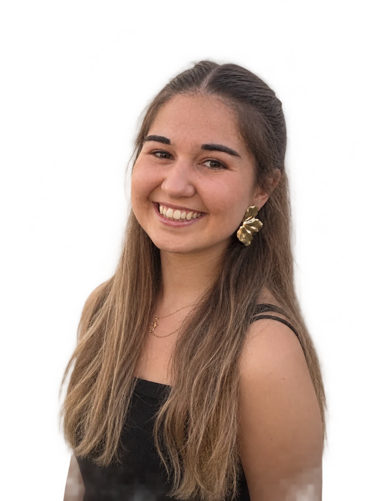

From science to clinical impact.
Bióloga con experiencia en investigación biomédica, transferencia tecnológica y comunicación científica, actualmente enfocada en el desarrollo clínico y la industria farmacéutica. Me interesa conectar la ciencia con su aplicación real: desde la investigación y el ensayo clínico hasta el paciente.

Grado en Biología · Universidad de Córdoba
Máster de Acceso a Industria Farmacéutica, Biotecnológica y de Tecnologías sanitarias con certificación en gestión y monitorización de ensayos clínicos · Marketing Farmacéutico · Departamento Médico
Español nativo · Inglés B2 First (Cambridge)
Con B de Biología · Canal de difusión sobre Biología e Innovación científica
Quién soy y qué busco.
Me interesa el punto en el que la ciencia deja de ser conocimiento y empieza a convertirse en impacto: cuando una investigación puede transformarse en un tratamiento, una innovación o una mejor decisión para el paciente.
Soy bióloga por la Universidad de Córdoba y tengo un Máster en Especialidades Biológicas Hospitalarias. Durante mi etapa universitaria trabajé en investigación en epigenética y reparación del ADN y, posteriormente, en el IMIBIC, donde participé en proyectos de innovación, propiedad intelectual y transferencia de resultados de investigación.
En paralelo fundé "Con B de Biología", un proyecto de divulgación científica que me ha permitido desarrollar una forma de comunicar ciencia con rigor y hacerla comprensible y relevante para públicos diferentes.
Actualmente estoy orientando mi trayectoria hacia la industria farmacéutica y los ensayos clínicos, mientras me formo en áreas transversales de la industria como departamento médico y marketing farmacéutico.
Busco formar parte de equipos que trabajen para llevar la innovación biomédica un paso más allá: de la evidencia científica a soluciones que puedan generar un impacto real en el paciente.
Funciones donde encaja mi perfil, en pharma, biotech y health tech.
Coordinación de estudios, monitorización (CRA/CTA) y documentación bajo ICH-GCP. Mi área principal.
Trasladar evidencia científica a profesionales sanitarios y equipos internos con rigor y claridad.
Dossieres, fichas técnicas y procedimientos ante EMA y AEMPS. Precisión y método con documentación compleja.
Propiedad intelectual, patentes y traslación de la investigación biomédica al mercado.
Materiales para pacientes y profesionales, formación interna y contenido divulgativo.
Contenido clínico, educación al paciente y validación científica en productos digitales de salud.
Lo que aporto desde el primer día.
FarmaLeaders Talento.
Apoyo a las actividades científicas y educativas de la organización. Planificación y coordinación de actividades e iniciativas relacionadas con la ciencia.
Universidad a Distancia de Madrid (UDIMA).
Proyecto de divulgación sobre biología, investigación biomédica e innovación científica. Creación y gestión de contenido para públicos amplios.
Apoyo a la transferencia de tecnología en un entorno de investigación biomédica. Trabajo con información científica y de patentes, propiedad intelectual y traslación de resultados a aplicaciones reales.
Universidad de Córdoba. Biología molecular, metodología científica y documentación de investigación.
Universidad de Córdoba.
Proyecto de divulgación que fundé en 2024 sobre biología, investigación biomédica e innovación científica.
También por LinkedIn. Abierta a prácticas y primer empleo en investigación clínica, industria farmacéutica, biotech y health tech. Disponibilidad para movilidad.